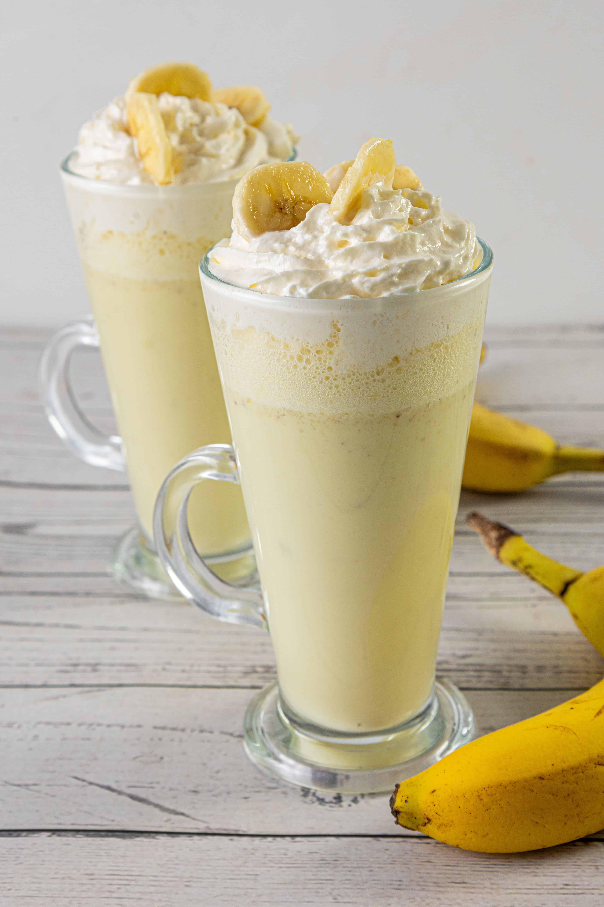

Home
Banana Milkshake Recipe

Description
The Banana Milkshake is a creamy, naturally sweet drink that's full of energy. It’s made using ripe bananas, chilled milk, and a bit of sugar or honey. This shake is perfect for breakfast, post-workout refreshment, or as a quick, filling snack.
Ingredients
- 1 ripe banana
- 1 cup cold milk
- 1 tsp sugar or honey
- A few ice cubes (optional)
Steps:
- Peel and slice the banana into small pieces.
- Add banana, milk, sugar/honey, and ice cubes to a blender.
- Blend until smooth and creamy.
- Pour into a glass and serve chilled.